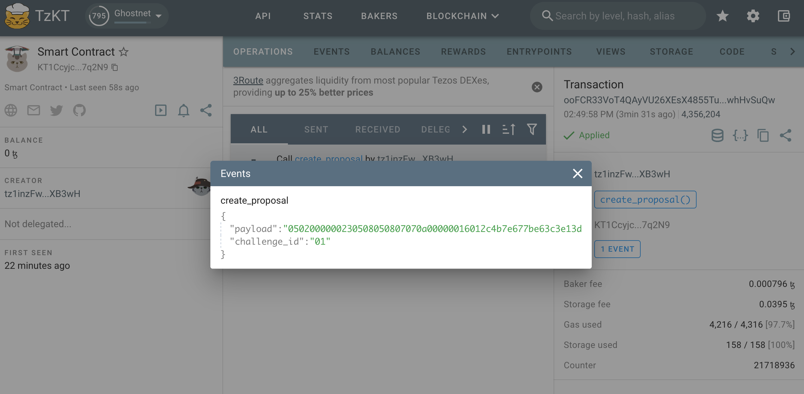

Understand the Entrypoint and the Proof
TzSafe, a multisig wallet, is created using a smart contract. The TzSafe application, TzSafe UI, offers a user-friendly interface for interacting with wallets. If users wish to develop their own smart contract to interact with TzSafe, understanding the entrypoints of the wallets is crucial. This section will introduce the entrypoints of TzSafe in different versions. We'll use Better-Call Dev as an example to demonstrate.
To determine the version of TzSafes:
- Within the TzSafe application, you can find the version information as follows:

Version ≥0.3.x
- Beginning with version 0.3.0, wallets can generate proof.
- Beginning with version 0.3.0, wallets will free up storage space upon the resolution of proposals, leading to savings on storage fees for subsequent proposal creations. Please be aware of security issue: the newly added entrypoint for updating metadata does not check ownership, which means that anyone can modify the wallet's metadata.
- Beginning with version 0.3.2, wallets now support two new types of proposals:
add_or_update_metadataandremove_metadata. Please note that this support is available only in the contract, not in the TzSafe UI.
Version 0.3.2
To align with TZIP-27, TzSafe team offers several proposed models for integration. For more detailed information, please refer to this link. We have chosen to implement the "PoE as an executed action" model, and we will maintain the usage of the term "actions" as a way to distinguish them from Tezos' standard transactions.
💡 Transactions approved through the owners' consensus are referred to as "actions" to differentiate the term from Tezos' standard transactions.
Regarding the interface adaptation, it may seem complex and daunting for users when dealing with the entrypoints and parameters required for signing and resolving proposals. On the contrary, the process is straightforward. Users do not need to calculate signatures or hash data themselves. From proposal creation to resolution, all that's needed is a blocker explorer to check the results of the operations.
Create a Proposal
The create_proposal entrypoint is employed to generate proposals, taking a list of proposal contents as its parameter.

By clicking +ADD, we can select the kind of proposal to create.

When designing the TzSafe contract, appropriate annotations are assigned to each variable within the parameters. Consequently, when inspecting the TzSafe contract on Better-Call Dev, interaction is straightforward, as each field is largely self-explanatory.

Upon the successful creation of a proposal by an owner, an event tagged %create_proposal is emitted.


This event includes two pieces of information that we'll need them to sign and resolve the proposal:
challenge_id: This represents a unique ID for each proposal, presented in bytes. With each new proposal, the ID increases by one.payload: This contains the proposal's content but is encoded in Michelson'spack. If weunpackthe payload, it should match the input parameter. However, typically, there's no need tounpack. If the need does arise, we must specify the type, which can be found either:
Here's an example of using unpack in the camligo:
> git clone git@github.com:marigold-dev/tzsafe.git
> cd tzsafe
> cat unpack_proposal_contents.mligo
#import "./tzsafe/src/internal/proposal_content.mligo" "Proposal_content"
type proposal_content = Proposal_content.Types.t
type proposal_contents = proposal_content list
> cat unpack_proposal_contents.mligo
let test_unpack_proposal_contents =
// remember to add prefix "0x" to the bytes receiving from the event with tag `%create_proposal`
let bytes = 0x0502000000250508050807070a0000001601361c589d324f1575cccb0adcb58664174c74ee7c000080897a in
// print unpack result
Test.log (Bytes.unpack bytes : proposal_contents option)
> ligo run test unpack_proposal_contents.mligo
Some ([Transfer ({amount = 1000000mutez ; target = KT1DWt1ec76EPrvavMS4Rz95hkYGJFLP3iTp})])
Everything at the top-level was executed.
- test_unpack_proposal_content exited with value ().
Sign a Proposal
The sign_proposal entrypoint is used to sign a proposal. To sign a proposal, it must first be created. Therefore, we can only provide the challenge_id and payload obtained during the proposal creation. If we agree to execute the proposal, the agreement field should be set to true (check the checkbox); otherwise, it should be set to false(uncheck the checkbox).

TzSafe requires payload to be provided again in sign_proposal to prevent reorgs. By verifying both the challenge_id and payload, TzSafe ensures that we are executing the intended content.
Once the signing is completed, an event is emitted with the tag %sign_proposal. This event is simply for displaying the signing result.

Resolve a Proposal and Generate the Proof
The entrypoint for resolving is named challenge_proof_of_event in accordance with TZIP-27. However, it can only be successfully performed when certain conditions are met. Please see here for more details.
Similar to signing a proposal, we need to provide the challenge_id and payload obtained during proposal creation to ensure that reorgs have occurred.

When this entrypoint is successfully executed, two events are emitted:
- An event with the tag
%resolve_proposalshows the simple result of the proposal, including whether it wasexecuted,rejected, orexpired. In most cases, this information is sufficient. - The other event, tagged as
%proof_of_event, serves as the proof of event for TZIP-27. This proof contains a pair ofchallenge_idandpayload. The payload is encoded in Michelson'spack. If we performunpack, we can access the details of the proposal, including signers, resolvers, contents, and more. The type forunpackcan be found:

Here is an example of using unpack in the camligo:
> git clone git@github.com:marigold-dev/tzsafe.git
> cd tzsafe
> cat unpack_proposal.mligo
#import "./tzsafe/src/internal/storage.mligo" "Storage"
type proposal = Storage.Types.proposal
let test_unpack_proposal =
// remember to add prefix "0x" to the bytes receiving from the proof
let bytes = 0x05070705050505030b0707020000001f07040a00000016000101e9a6d43af927384fcd1068ffc12e461e219f20030a070707070a00000016000101e9a6d43af927384fcd1068ffc12e461e219f2000bfe9bbd30c0707050907070a00000016000101e9a6d43af927384fcd1068ffc12e461e219f2000a7edbbd30c02000000230508050807070a000000160142d3fb211660bcec97e8117919c549337a2cb425000001 in
// print unpack result
Test.log (Bytes.unpack bytes : proposal option)
> ligo run test unpack_proposal.mligo
Some ({contents = [Transfer ({amount = 1mutez ; target = KT1Eg8784FTRicrRW9nt13fvRh1hYKWwFF9X})] ; proposer = {actor = tz28VMEvxy1pwb7prrvGwLw4bQf2eCMn6P1c ; timestamp = timestamp(2023-10-24T08:04:15Z)} ; resolver = Some ({actor = tz28VMEvxy1pwb7prrvGwLw4bQf2eCMn6P1c ; timestamp = timestamp(2023-10-24T08:08:07Z)}) ; signatures = [tz28VMEvxy1pwb7prrvGwLw4bQf2eCMn6P1c -> true] ; state = Executed (())})
Everything at the top-level was executed.
- test_unpack exited with value ().
Both users and DApps can track the new actions of TzSafe without being inconvenienced by internal TzSafe operations by monitoring the events %proof_of_event or %resolve_proposal tags. We can utilize APIs provided by TZKT or Taquito to assist us in this regard. Please note that if the proof is intended for any purpose, it is crucial to verify the proof as the initial step. In the TzSafe design, each operation containing the proposal resolution will also have only one associated proof.
Version 0.3.1
Please pay attention to a security concern: the newly introduced entrypoint for updating metadata in the contract storage, following TZIP-16, does not verify ownership, enabling anyone to modify the wallet's metadata. It's important to note that this issue does not affect the other TzSafe functions, nor the TzSafe UI. Individuals concerned about this issue should consider migrating to at least version 0.3.2.
The following are the types needed if one wants to access the details of the bytes produced by the wallet.
-
the type of proposals:
-
the type of proof:
Version 0.3.0
Version 0.3.0 supports generating proof but does not support saving storage fees. This version is exclusively available on the ghostnet.
Version ≤ 0.1
In contrast to version ≥ 0.3.1, the entrypoints and their parameters are self-explanatory and presented in readable types, ensuring a user-friendly interaction with them on Better-Call Dev for developing.
Events are still emitted when proposals are created, signed, and resolved. It's important to note that there is no proof emitted to conform to the TZIP-27 standard.
Please note that there is a legacy proposal content, execute of create_proposal, in the contract. The legacy proposal content functions the same as transfer. The execute was designed to be able to customizabled the type when users generate contracts, allowing the wallet to call other specific contracts. In some cases, if the wallet consistently interacts with a specific contract, this can save on storage and gas fees. Now, we are inclined to use execute_lambda to replace execute, so the execute version has been removed in version ≥ 0.3.1.